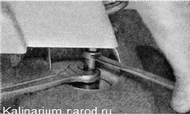
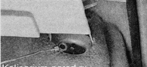
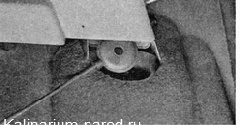
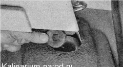
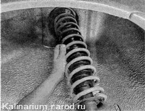
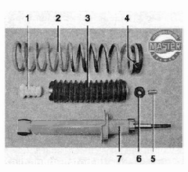

Амортизатор и пружина задней подвески - снятие и установка
Работу удобно выполнять на смотровой канаве. Но при необходимости снять и установить пружину и амортизатор задней подвески можно, установив автомобиль на ровную горизонтальную площадку
Амортизаторы и пружины заменяйте парами.
Для выполнения работы потребуются помощник, а также:
— смотровая канава или эстакада;
— подставка; приспособление для разборки
стоек подвески.
Снятие
1. Подготавливаем автомобиль к выполнению работы и вывешиваем заднюю часть автомобиля на подставках.
При отсутствии ямы или эстакады, снимаем заднее колесо автомобиля со стороны заменяемого амортизатора .
2. Снимаем полку багажного отделения.
3. Складываем заднее сиденье.
4. Поддев шлицевой отверткой, снимаем заглушку.

5. Устанавливаем приспособление для разборки стоек на гайку и шток амортизатора. Удерживая с помощью двух ключей шток амортизатора от проворачивания, отворачиваем его гайку.

6. Магнитом снимаем со штока амортизатора пружинную шайбу...

...и верхнюю опорную шайбу.

7. Снимаем со штока амортизатора верхнюю подушку крепления штока

8. Двумя ключами на 19 мм отворачиваем гайку болта крепления нижнего конца амортизатора к балке заднего моста и вынимаем болт.
9. Отводим нижний конец амортизатора в сторону задней части автомобиля и снимаем амортизатор.

10. Снимаем с амортизатора пружину и ее прокладку, а также, если необходимо, снимаем со штока амортизатора нижнюю подушку и распорную втулку.
Установка
В задней подвеске автомобиля следует устанавливать пружины одного класса (с одинаковым цветом меток).
1. Перед установкой амортизатора закрепляем резиновую прокладку 4 на пружине 2 изоляционной лентой или скотчем.
2. Устанавливаем пружину на амортизатор и полностью вытягиваем шток. Надеваем на шток амортизатора буфер 1, защитный кожух 3 с крышкой, распорную втулку 5 и нижнюю подушку 6 (если их нет на штоке).

При установке амортизатор необходимо сориентировать таким образом, чтобы торец нижнего витка пружины был обращен в сторону колеса.
3. Вводим шток амортизатора в отверстие чашки кузова, одновременно помощник надевает на шток верхнюю подушку, опорную шайбу и наживляет на несколько оборотов гайку штока.
4. Приподнимаем рычаг до совмещения отверстий в амортизаторе и кронштейне балки. Устанавливаем болт нижнего крепления амортизатора и заворачиваем его гайку (не затягивая).-

При отсутствии помощника можно сначала закрепить амортизатор на балке задней подвески. Затем, подставив под задний рычаг упор, плавно на домкрате опустить автомобиль, контролируя при этом, чтобы шток амортизатора вошел в отверстие кузова, и уже после этого надеть верхнюю подушку с опорной шайбой и наживить гайку.
5. Устанавливаем снятое колесо (если работа выполнялась без смотровой ямы) и опускаем автомобиль на колеса. Несколько раз нажимаем на заднюю часть автомобиля для самоустановки элементов подвески.
6. Затягиваем гайку крепления штока амортизатора моментом 50-61,7 Н-м (5,1-6,3 кгс-м).
7. Затягиваем гайку болта нижнего крепления амортизатора моментом 66,6-82,3 Н-м (6,8-8,4 кгс-м).